Communication, Collaboration, Social media, Telepresence
9 / 56
Use →← or click buttons to navigate
3D Interactive Media Development
History - GUI
GUI
1973-1983 – Mouse, Keyboard, Raster Graphics, PCs
UI Design
HCI Studied
Perception
Cognition
Human Factors
Graphic Design
10 / 56
Use →← or click buttons to navigate
3D Interactive Media Development
History - 1940s
1940s
Fred Waller – First VR System – Military Tail Gunner Trainer
www.cineramaadventure.com/trainer.htm
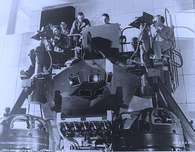
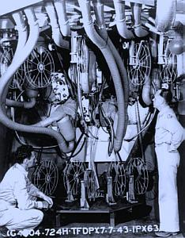
11 / 56
Use →← or click buttons to navigate
3D Interactive Media Development
History - 1960s
1960s
Ivan Sutherland – Head Tracked Head Mounted Display
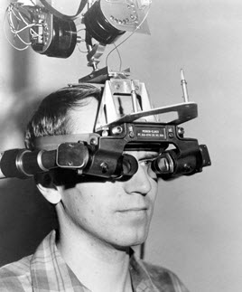
12 / 56
Use →← or click buttons to navigate
3D Interactive Media Development
History - 1980s on…
1980s on…
Tracking and Mocap
Computer vision
Haptics
HMDs – Stereoscopy, FOV, FOR, Resolution and Refresh rate improved
13 / 56
Use →← or click buttons to navigate
3D Interactive Media Development
History – Platform Development - 1990s on…
1990s on…
Web Browsers – VRML
Games – PC Graphics cards and GPUs drove development
Commercial and Military flight simulators
Augmented Reality from 2000 onwards
Mobile processor development
Smart Phone/ Tablet development - GPS, WiFi, Touch Controls, Front and Back mounted cameras, high speed processors
Arcade VR
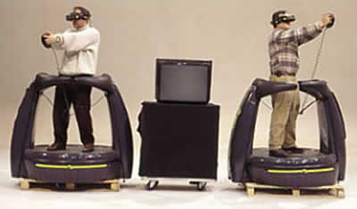
14 / 56
Use →← or click buttons to navigate
3D Interactive Media Development
History – Platform Development - 2000s on…
2000s on…
Commercial VR
Spatial Games Controllers
Wii
Sony eyeToy
Kinect
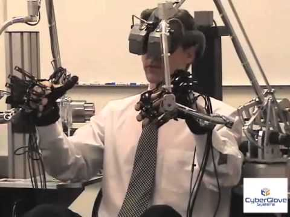
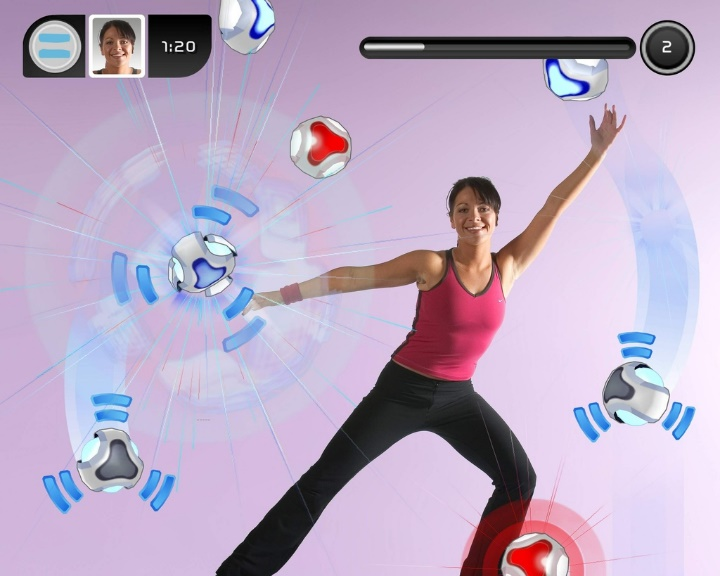
15 / 56
Use →← or click buttons to navigate
3D Interactive Media Development
Current - Input Devices for VE - 2D GUI
2D GUI
Mouse
Keyboard
Keyboards
Chording Keyboards
Virtual (Tablet) Keyboards
Custom hardware
16 / 56
Use →← or click buttons to navigate
3D Interactive Media Development
Current - Input Devices for VE - 3D Motion Tracking
3D Motion Tracking
3D Motion Tracking – Input Devices
Razer Hydra – facebook VR
Haptic Pen - Botox
Magnetic sensors
3D Mouse - 3D Spacemouse – 6dof, no tracking
3D Motion Capture – Full Body or Part Body
Waldo
Gloves
Synertial
Cyberglove
Haptic Body Device
Cyber grasp
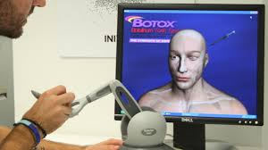
17 / 56
Use →← or click buttons to navigate
3D Interactive Media Development
Current - Input Devices for VE - 3D Sensors
3D Sensors
3D Sensors – Magnetic, Inertial, Accelerometer, GPS
Sensor Data
3dof – Orientation or Position only
6dof – Position and Orientation
Continuous Data or Discrete
Typical Uses
Head Tracker for POV, Parallax views, Fishtank VR, HMDs
Hands, Feet – Vtime Virtual Treadmill
Vive Paintbrush
18 / 56
Use →← or click buttons to navigate
3D Interactive Media Development
Current - Outputs/Displays - Output/Displays…
Output/Displays…
Monitor – Mono and Stereo
Head Mounted Display – tracked head, stereo
Projected – Mono/Stereo, Cave
Retinal
Volumetric
Mobile Device – Smart Phone or Tablet, Can be used as a virtual window, and HMD in mono/stereo (Google Cardboard, Samsung GearVR), or a mobile “desktop”
19 / 56
Use →← or click buttons to navigate
3D Interactive Media Development
3DUI Interaction Practical Considerations:
Overview
Output DeviceCan introduce third coordinate space to consider, along with VE and Input device
3DUI - Basic Elements - Basic Elements to consider and Plan
Basic Elements to consider and Plan
Navigation
Travel
Point of View - POV
Interaction
Selection
Manipulation
System Control
States
Modes of Interaction
25 / 56
Use →← or click buttons to navigate
3D Interactive Media Development
3DUI - Navigation - Basic Elements to consider and Plan
Basic Elements to consider and Plan
Navigation
The most common VE task, and is actually composed of two tasks.
Travel is the motor component of navigation, and just refers to the physical movement from place to place.
Wayfinding is the cognitive or decision making component of navigation, and ask the questions “Where am I”, ”Where do I want to go”, ”How do I get there”…
26 / 56
Use →← or click buttons to navigate
3D Interactive Media Development
3DUI - Navigation - Basic Elements to consider and Plan
Basic Elements to consider and Plan
Navigation
Travel
Point of View – POV
Examples
Examples:
WASD
Pointing – Travel and gaze in different directions
Arrows
Mouse Look/orbit
Clutching, Waypoints, Grabbing and Pulling
Paired with Locomotion devices – Vtime Treadmill
27 / 56
Use →← or click buttons to navigate
3D Interactive Media Development
3DUI – Navigation Classes
3DUI – Navigation Classes
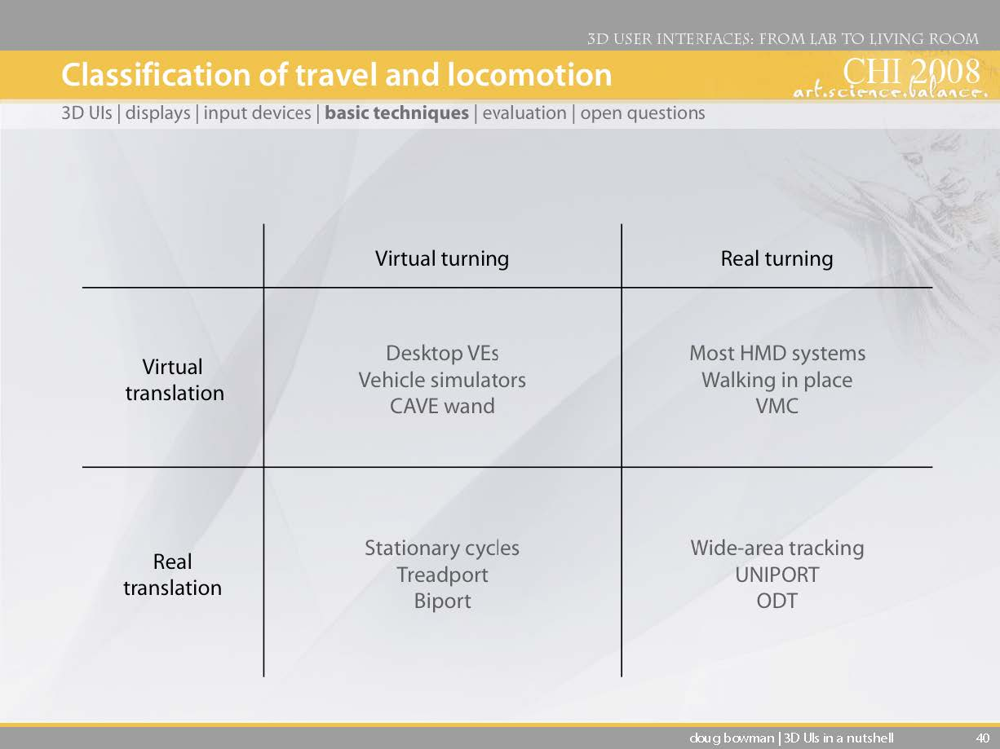
28 / 56
Use →← or click buttons to navigate
3D Interactive Media Development
3DUI – Navigation Tips - Travel should be simple:
Travel should be simple
Low cognitive load
Target based to object
Steering for search
Provide multiple techniques for multiple tasks
Use graceful transitions
Separate gaze from travel – permanent or switchable
Quake WebGL
Code Example
//media.tojicode.com/q3bsp/
29 / 56
Use →← or click buttons to navigate
3D Interactive Media Development
3DUI – Navigation - Reverie
Reverie
Reverie – lazynav
https://youtu.be/hL5mQcCFU9I
Vtime Treadmill
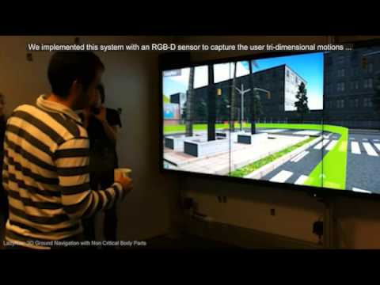
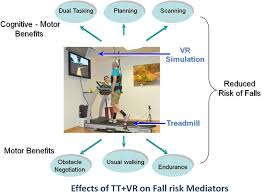
30 / 56
Use →← or click buttons to navigate
3D Interactive Media Development
3DUI - Basic Elements - Basic Elements to consider and Plan
Basic Elements to consider and Plan
Interaction
Selection
Simply the specification of an object or
set of objects for some purpose.
Manipulation
Refers to the specification of object properties (most often position and orientation, but also other attributes). Selection and Manipulation are often used together, but selection may be a stand-alone task. For example, the user may select an object in order to apply a command such as delete to the obj.
31 / 56
Use →← or click buttons to navigate
3D Interactive Media Development
3DUI - Selection
Selection
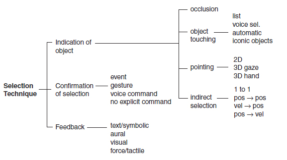
32 / 56
Use →← or click buttons to navigate
3D Interactive Media Development
3DUI Selection Techniques - Virtual Hand
Virtual Hand
Raycasting/Occlusion
Go-Go arm extension
33 / 56
Use →← or click buttons to navigate
3D Interactive Media Development
3DUI - Selection - Simple Virtual Hand
Simple Virtual Hand
Object is Selected by collision, made child of mapped VH, then released.
Natural one-to-one mapping between Physical and Virtual hands.
Kinect is a good example of use.
Direct Mapping and touching of objects.
Can only select objects within Physical hand reach.
Razer VR +
Facebook VR
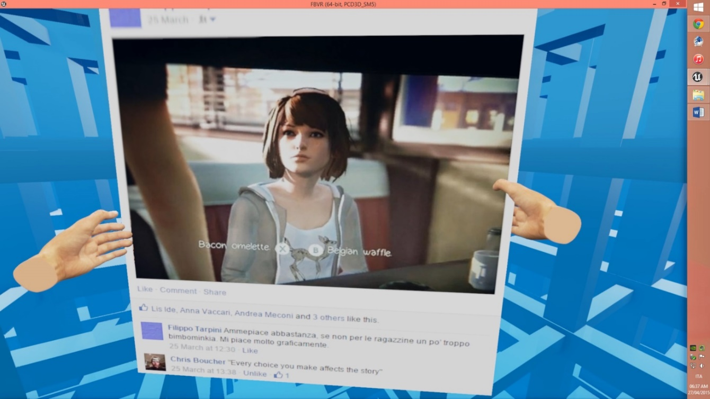
34 / 56
Use →← or click buttons to navigate
3D Interactive Media Development
3DUI - Selection - RayCasting
RayCasting
Virtual Hand or Mouse Laser Pointer
Laser pointer attached to Physical hand
Ray is cast into the 3D VE from 3D input or 2D Plane (Screen)
First object intersected is selected
Made by only 2 dof (pitch and yaw)
Efficient - Mouse or touch
Limitation of 3rd dof works well for remote selection
Also cone casting and snap to object rays
High performance
Occlusion
Works in image plane (tablet, mobile)
Covers it to select – ray from eye to nearest object through finger
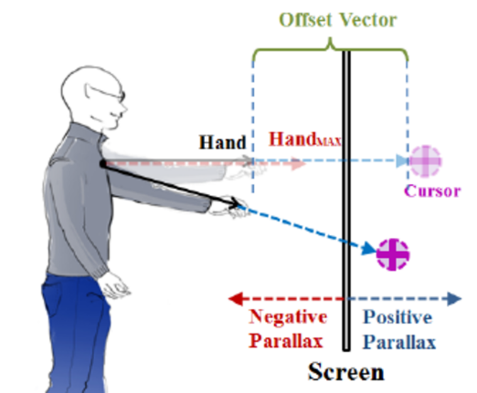
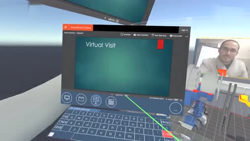
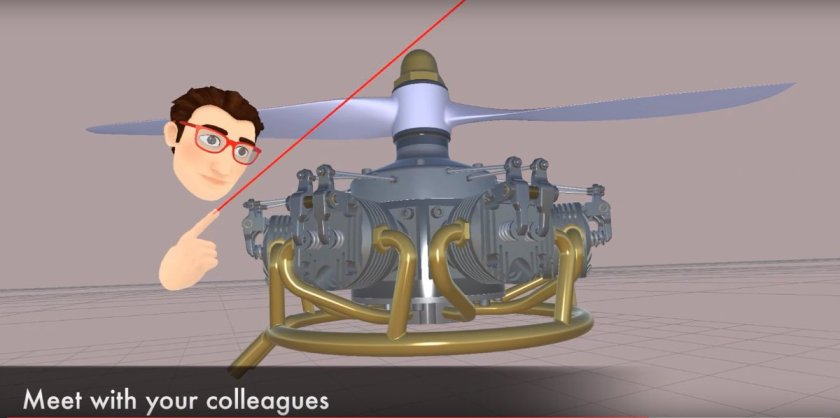
35 / 56
Use →← or click buttons to navigate
3D Interactive Media Development
3DUI - Selection - Occlusion
Occlusion
Works in image plane (tablet, mobile)
Covers it to select – ray from eye to nearest object through finger